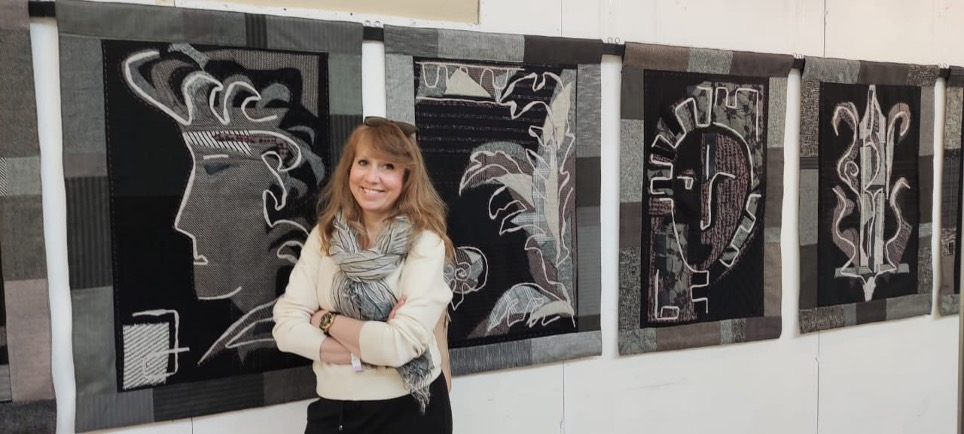

Анна Векслер
художник декоративного искусства

Об авторе
- Член Союза художников России, Санкт-Петербургское отделение
- Кандидат педагогических наук, профессор
- Заведующая кафедрой декоративного искусства и дизайна института художественного образования РГПУ им. А. И. Герцена, Санкт-Петербург
- Член Гильдии текстильщиков Санкт-Петербурга
- Член Международного союза педагогов-художников
- Иностранный эксперт Международного института искусств им. А. И. Герцена при Шаньдунском педагогическом университете (КНР)
- Директор Центра дизайна Открытого кампуса Герценовского университета
Анна Векслер работает в различных текстильных материалах. Основными техниками в её творчестве являются ткачество и коллаж, которые способны продемонстрировать самые неожиданные сочетания материалов, техник и приёмов монтажа. Гобелены и коллажи автора украшают общественные и частные интерьеры, привнося в пространство особую магию авторского искусства и тепло материала.
Автор всегда в поиске соответствия идеи, материала и техники, в которой эта идея воплощается. В ткачестве — от классического шпалерного до авторских приёмов плетения — создаются монументально-декоративные произведения, отвечающие сложным философским темам, волнующим автора. А за «лёгким» коллажным исполнением может скрываться не только долгая и кропотливая работа мастера, но и особый аллегорический месседж.
С 1998 года А. К. Векслер ведёт активную творческую и выставочную деятельность (участник более 200 выставочных проектов, 15 персональных выставок), работает в технике традиционного ткачества (гобелен), экспериментирует с классическими и современными материалами (бумага, текстиль, эмаль), создаёт различные коллажи и арт-объекты.
Также является организатором выставок и выставок-конкурсов студентов и педагогов института художественного образования (более 50), в том числе выставок в отделе Русского музея «Российский центр музейной педагогики и детского творчества» (2019, 2020 гг.), в Мурманском областном художественном музее (2024 г.), на различных городских площадках, в том числе в Министерстве просвещения РФ (2025 г.).
Биография
- 1972Родилась в городе Ленинграде (ныне — Санкт-Петербург).
- 1991Окончила Ленинградское художественное училище им. В. А. Серова (ныне СПбХУ имени Н. К. Рериха), отделение скульптуры.
- 2000Окончила Санкт-Петербургскую государственную художественно-промышленную академию (бывшее ЛВХПУ им. В. И. Мухиной, ныне — СПГХПА им. А. Л. Штиглица), кафедру художественного текстиля.
- 2001Вступила в Союз художников России, Санкт-Петербургское отделение, секция декоративно-прикладного искусства.
- 2002Преподаёт в РГПУ им. А. И. Герцена; с 2020 года — заведующая кафедрой декоративного искусства и дизайна института художественного образования.
- 2008Организатор и куратор выставок учебных и творческих работ студентов РГПУ им. А. И. Герцена.
- 2011Защитила диссертацию на соискание учёной степени кандидата педагогических наук.
- 2011—2018Руководитель детской художественной студии в Российском центре музейной педагогики и детского творчества (отдел Русского музея), Санкт-Петербург.
- 2012Преподаёт в Академии художеств имени Ильи Репина, ведёт авторский курс «Шпалера как вид монументального искусства» в мастерской монументальной живописи, которой руководит Академик РАХ, народный художник РФ, профессор А. К. Быстров.
- 2015Член жюри городских, региональных и международных выставок детского творчества. Проводит курсы повышения квалификации для педагогов дополнительного образования в области декоративного искусства.
- 2016Присвоено учёное звание доцента по специальности 13.00.02 «Теория и методика обучения и воспитания».
- с 2018Автор и руководитель дополнительной общеобразовательной программы «Материалы и техники изобразительного и декоративного искусства (практическая направленность)» в ГБОУ дополнительного образования детей «Ленинградский областной центр развития творчества одарённых детей и юношества „Интеллект“».
- 2025Присвоено учёное звание профессора по специальности 5.10.3. «Декоративно-прикладное искусство».
Выставки
С 1998 года — участник более 200 выставочных проектов. Основные из них:
Выставки в России 41
- Ежегодные выставки творческих работ — Выставочный центр Санкт-Петербургского союза художников. Санкт-Петербург, 2001–2023.
- «Молодость России» — Центральный дом художника. Москва, 2001.
- «ЗОО-Арт» — ЦВЗ «Манеж». Санкт-Петербург, 2002.
- «Коллаж в России — XX век» — Государственный Русский музей. Санкт-Петербург, 2005.
- «Вся Россия» — Центральный дом художника. Москва, 2009.
- «Небо в искусстве» — Государственный Русский музей. Санкт-Петербург, 2010.
- «Движение, форма, танец» — Государственный Русский музей. Санкт-Петербург, 2011.
- «Коллаж». Из цикла «Учитель и ученики». Выставка работ А. К. Векслер и студентов РГПУ им. А. И. Герцена — Государственный Русский музей, отдел «Российский центр музейной педагогики и детского творчества». Санкт-Петербург, 2012.
- «Гобелен». Из цикла «Учитель и ученики». Выставка работ А. К. Векслер и студентов РГПУ им. А. И. Герцена и Академии художеств (мастерская монументальной живописи А. К. Быстрова) — Государственный Русский музей, РЦМПиДТ. Санкт-Петербург, 2014.
- «KUROCHKA RYABA-2014». IV Международный фестиваль художественного текстиля — Выставочный центр Санкт-Петербургского союза художников. Санкт-Петербург, 2014.
- Вторая Российская триеннале современного гобелена — Музей-заповедник «Царицыно». Москва, 2014.
- «KUROCHKA RYABA-2015». V Международный фестиваль художественного текстиля — Выставочный зал Союза художников. Санкт-Петербург, 2015.
- «Время кукол» (ежегодная выставка) — Выставочный зал Союза художников. Санкт-Петербург, 2016–2022.
- «Остров сокровищ». I Международная триеннале мини-текстиля — Музей «Русский Левша». Санкт-Петербург, 2017.
- «Под крылом пеликана — 2017». Выставка педагогов и студентов факультета изобразительного искусства РГПУ им. А. И. Герцена к 220-летию университета — Государственный Русский музей, РЦМПиДТ. Санкт-Петербург, 2017.
- «85 лет Союзу художников Санкт-Петербурга» — ЦВЗ «Манеж». Санкт-Петербург, 2017.
- Третья Российская триеннале современного гобелена — Музей-заповедник «Царицыно». Москва, 2018.
- «Творческая осень». III Международная выставка-конкурс художников-преподавателей — СПбГУПТД. Санкт-Петербург, 2018.
- «Под крылом пеликана — 2019». Выставка педагогов и студентов к 60-летию факультета — Государственный Русский музей, РЦМПиДТ. Санкт-Петербург, 2019.
- «PRO ОРНАМЕНТ». Из цикла «Учитель и ученики» — Государственный Русский музей, РЦМПиДТ. Санкт-Петербург, 2019.
- II Уральская триеннале декоративного искусства. Уральский культурный форум — Центр дизайна. Екатеринбург, 2019.
- «Остров сокровищ. Город». II Международная триеннале мини-текстиля — Выставочный зал Иоанновского равелина, Петропавловская крепость. Санкт-Петербург, 2020.
- «PRO ОРНАМЕНТ — 2». Из цикла «Учитель и ученики». Проект «Серия тактильных рельефных панно „Орнаменты Строгановского дворца“» и работы студентов ИХО РГПУ им. А. И. Герцена — Государственный Русский музей, РЦМПиДТ. Санкт-Петербург, 2020.
- Четвёртая Российская триеннале современного гобелена — Музей-заповедник «Царицыно». Москва, 2021.
- «KUROCHKA RYABA-2021». XI Международный фестиваль художественного текстиля — Выставочный центр Санкт-Петербургского союза художников. Санкт-Петербург, 2021.
- «Великий шёлковый путь. Диалог культур». IV международный евразийский фестиваль — РГПУ им. А. И. Герцена. Санкт-Петербург, 2021.
- «Российская неделя искусств». Международная выставка-конкурс — Конгресс-холл «Амбер-плаза». Москва, 2022.
- «Под крылом пеликана — 2022». Выставка педагогов и студентов ИХО РГПУ им. А. И. Герцена к 220-летию университета — Выставочный центр Санкт-Петербургского союза художников. Санкт-Петербург, 2022.
- III Уральская триеннале декоративного искусства. Уральский культурный форум — Центр дизайна. Екатеринбург, 2022.
- «KUROCHKA RYABA-2022». XII Международный фестиваль художественного текстиля — Выставочный центр Санкт-Петербургского союза художников. Санкт-Петербург, 2022.
- «90 лет Союзу художников Санкт-Петербурга» — Выставочный центр Санкт-Петербургского союза художников. Санкт-Петербург, 2022.
- «Созвездие». I Международный фестиваль художественного текстиля — Елагиноостровский дворец, Конюшенный корпус. Санкт-Петербург, 2022.
- «Санкт-Петербург — Москва». Совместная выставка Санкт-Петербургского союза художников и Союза художников России — Выставочный центр Санкт-Петербургского союза художников. Санкт-Петербург, 2022.
- «Белоснежный квадрат». Проект Гильдии текстильщиков Санкт-Петербурга — Выставочный зал библиотеки Московского района. Санкт-Петербург, 2023.
- «PRO ОРНАМЕНТ — 3». Из цикла «Учитель и ученики» — Мурманский областной художественный музей. Мурманск, 2023.
- «Созвездие». II Международный фестиваль художественного текстиля — Елагиноостровский дворец, Конюшенный корпус. Санкт-Петербург, 2023.
- «Текстильная книга художника». Всероссийская выставка-конкурс в рамках II фестиваля «Созвездие» — Елагиноостровский дворец, Конюшенный корпус. Санкт-Петербург, 2023.
- «Коды. Истории в текстиле». II Всероссийская научно-практическая конференция и выставка — СПГХПА им. А. Л. Штиглица. Санкт-Петербург, 2023.
- «Творческая осень». VIII Международная выставка-конкурс художников-преподавателей — СПбГУПТД. Санкт-Петербург, 2023.
- «Санкт-Петербургская неделя искусств». Международная выставка-конкурс — Выставочный центр Санкт-Петербургского союза художников. Санкт-Петербург, 2023.
- «Санкт-Петербург». Региональная художественная выставка — Выставочный центр Санкт-Петербургского союза художников. Санкт-Петербург, 2023.
Выставки за рубежом 7
- «Русское эмальерное искусство» — Музей эмали и витража. Равенштайн, Голландия, 2009.
- «Петербургская палитра» — Российский центр науки и культуры. Варшава, Польша, 2013.
- «Кукольный бал Северной Пальмиры» — Национальный исторический музей Республики Беларусь. Минск, 2013.
- «Искусство огня» — Музей эмалей и стекла. Нова-Миланезе, Италия, 2013.
- Международная выставка эмали — Центр искусств. Кузекс, Франция, 2014.
- Международная выставка художественного текстиля. «Дни культуры Санкт-Петербурга» — Исфахан, Иран, 2014.
- «В ожидании весны» — Art-Refuge Albert's. Рига, Латвия, 2016.
Персональные выставки 27
- «Поверхность» (с И. Дьяковым) — галерея «Меридиан». Самара, 1999.
- «Живописные эмали и художественный текстиль» (с И. Дьяковым) — «Русская галерея на Воздвиженке». Москва, 2003.
- «Живое искусство из Петербурга» (с И. Дьяковым) — Штутгарт, Германия, 2004.
- «Персонажи» (с И. Дьяковым) — галерея «Стекло». Санкт-Петербург, 2006.
- «Остановки в пути» (с И. Дьяковым) — галерея «Вавилон». Самара, 2007.
- «Станции. Шествие рыб» (с И. Дьяковым) — галерея «Стекло». Санкт-Петербург, 2008.
- «Творчество» — Еврейский общинный центр. Санкт-Петербург, 2009.
- «Эмали и текстиль» (с И. Дьяковым) — культурный центр «Толстой сквер». Санкт-Петербург, 2011.
- «Пространство памяти» (с И. Дьяковым) — Музей искусств. Челябинск, 2011.
- «Творчество-2» — Русский культурный центр. Будапешт, Венгрия, 2012.
- «Пути и шествия» (с И. Дьяковым) — галерея «Стекло». Санкт-Петербург, 2012.
- «Единое пространство» (с И. Дьяковым) — Государственный комплекс «Дворец конгрессов». Санкт-Петербург, 2012.
- «Семейная коллекция» (с И. Дьяковым) — Выставочный зал Санкт-Петербургского союза художников. Санкт-Петербург, 2015.
- «Собрание сочинений. Том 25» (с И. Дьяковым) — Музей «Русский Левша». Санкт-Петербург, 2016.
- «Февраль — время карнавала» — Art-Refuge Albert's. Рига, Латвия, 2017.
- «Арт-пространство» — выставочный зал клуба «Выборгская сторона». Санкт-Петербург, 2017.
- «Собрание сочинений. Том 26,5» (с И. Дьяковым) — Выставочный зал Московского района. Санкт-Петербург, 2018.
- «Внутренние миры» — Музей «Русский Левша». Санкт-Петербург, 2019.
- «Собрание сочинений. Том 27» (с И. Дьяковым) — Мурманский областной художественный музей. Мурманск, 2019.
- «Зима — карнавал» — РГПУ им. А. И. Герцена. Санкт-Петербург, 2021.
- «Собрание сочинений. Том 30» (с И. Дьяковым) — Самарский областной художественный музей. Самара, 2021.
- «Мои тексты» — Выставочный зал детской художественной школы им. М. К. Аникушина. Кронштадт, 2022.
- «Анна Векслер. Декоративно-прикладное искусство из собрания музея» — Мурманский областной художественный музей. Мурманск, 2022.
- «Собрание сочинений. Том 31» (с И. Дьяковым) — МОСХ, Выставочный зал на Беговой ул. Москва, 2023.
- «Собрание сочинений. Том 33. Символы и знаки» (с И. Дьяковым) — Галерея дизайна «Bulthaup». Санкт-Петербург, 2024.
- «Рождество в университете» — Открытый кампус РГПУ им. А. И. Герцена. Санкт-Петербург, 2025.
- «Собрание сочинений. Том 35» (с И. Дьяковым) — Мурманский областной художественный музей. Мурманск, 2026.
Работы в собраниях
- Музей декоративно-прикладного искусства (Museum of Applied Arts). Будапешт, Венгрия.
- Музей игрушки «Соракатениус» (Museum of Toys «Sorakateniys»). Кечкемет, Венгрия.
- Музей эмалей и стекла. Нова-Миланезе, Италия.
- Коллекция современного искусства Государственного комплекса «Дворец конгрессов» (Константиновский дворец). Санкт-Петербург.
- Художественный музей им. М. Туганова. Владикавказ, Северная Осетия.
- Мурманский областной художественный музей. Мурманск.
- Музей «Русский Левша». Санкт-Петербург.
- Частные коллекции России, Германии, Швеции, Финляндии, Америки, Венгрии.
Научно-исследовательская деятельность
Автор научных публикаций (более 100), учебных и учебно-методических пособий (15) и монографий (2).
Участие в научных исследованиях, конкурсах, грантах
- «Грант Президента Российской Федерации для поддержки творческих проектов общенационального значения в области культуры и искусства» — распоряжение Президента РФ от 30.04.2020 № 116-рп. Реализован проект «Разработка и создание серии тактильных рельефных панно для инвалидов по зрению „Орнаменты Строгановского дворца“».
- Дидактическая значимость орнамента как элемента содержания художественного образования, формирующего все уровни компетентности педагога-художника (руководитель). Внутренние гранты РГПУ им. А. И. Герцена. 2023–2025.
- Условия целостного освоения художественной культуры учащимися в рамках учебного предмета «Изобразительное искусство» и в реализации авторских программ отделения дополнительного образования детей по ключевым модулям (народное и декоративно-прикладное искусство; живопись, графика и скульптура; архитектура и дизайн) (исполнитель). Министерство просвещения РФ (государственное задание). 2025.
- Единый дизайн-код Герценовского университета в рамках новой кампусной и инфраструктурной политики национальных проектов «Наука и университеты» (2023–2030) и «Молодёжь и дети» (2025–2030) (исполнитель). Внутренние гранты РГПУ им. А. И. Герцена. 2025–2026.
- Разработка учебно-методического обеспечения для образовательной программы высшего образования — программа подготовки кадров высшей квалификации в ассистентуре-стажировке по специальности 54.09.03 «Искусство дизайна» (руководитель). Внутренние гранты РГПУ им. А. И. Герцена. 2025–2026.
Дипломы
- Диплом II степени в номинации «2D объект» — «Остров сокровищ». I Международная триеннале мини-текстиля, Музей «Русский Левша». Санкт-Петербург, 2017.
- Диплом лауреата в номинации «Лучшее композиционное произведение» — «Творческая осень». III Международная выставка-конкурс художников-преподавателей творческих направлений высших учебных заведений. СПбГУПТД, Санкт-Петербург, 2018.
- Диплом «Специальный» в номинации «Художественный текстиль» — «II Уральская триеннале декоративного искусства». Уральский культурный форум — Центр дизайна. Екатеринбург, 2019.
- Диплом за содействие в развитии художественного текстиля — «Остров Сокровищ. Город». II Международная триеннале мини-текстиля — Выставочный зал Иоанновского равелина, Петропавловская крепость. Санкт-Петербург, 2020.
- Диплом II степени в номинации «Декоративное искусство» — Всероссийская с международным участием выставка-конкурс творческих работ «Мир и война в искусстве», посвящённая 75-й годовщине победы в Великой Отечественной войне. РГПУ им. А. И. Герцена. Санкт-Петербург, 2020.
- Диплом I степени в номинации «Художественный текстиль, коллаж» — «Великий шёлковый путь. Диалог культур». Четвёртый международный евразийский фестиваль. РГПУ им. А. И. Герцена. Санкт-Петербург, 2021.
- Диплом I степени в номинации «Текстиль» — «Российская неделя искусств». Международная выставка-конкурс традиционного и современного искусства. Конгресс-холл «Амбер-плаза». Москва, 8–13 марта 2022.
- Диплом II степени в номинации «Текстиль» — «Российская неделя искусств». Конгресс-холл «Амбер-плаза». Москва, 11–16 октября 2022.
- Диплом II степени в номинации «Текстильный коллаж» на «III Уральской триеннале декоративного искусства». Уральский культурный форум — Центр дизайна. Екатеринбург, 2022.
- Диплом за лучшее креативное решение. Арт-объект «Подводные мифы» — «Текстильная книга художника», всероссийская выставка-конкурс в рамках II Международного фестиваля художественного текстиля «Созвездие». Выставочный зал Конюшенный корпус, Елагиноостровский дворец. Санкт-Петербург, 2023.
- Диплом I степени в номинации «Текстиль — ткачество» — «Санкт-Петербургская неделя искусств». Международная выставка-конкурс современного искусства. Выставочный центр Санкт-Петербургского союза художников. 31 октября — 05 ноября 2023.
- ГРАН-ПРИ за победу в номинации «Лучший гобелен» — «Творческая осень», VIII Международная выставка-конкурс художников-преподавателей творческих направлений высших и средних профессиональных учебных заведений. СПбГУПТД, Санкт-Петербург, 2023.
Почётные звания и награды
- Нагрудный знак Санкт-Петербургского отделения Российского творческого союза работников культуры «ЗА СЛУЖЕНИЕ КУЛЬТУРЕ» от 17.10.2018 г.
- Почётный знак «ЛУЧШИЙ ПЕДАГОГ-ХУДОЖНИК 2021 года» № ЛП 2021 – 019.
- Медаль Московского отделения ВТОО «Союз художников России» «ЗА РАЗВИТИЕ ТРАДИЦИЙ» от 13 января 2023 г.
- Диплом Российской академии художеств за создание произведений художественного текстиля (2023 г.), творческую и общественную деятельность и вклад в развитие декоративно-прикладного искусства от 09.04.2024 г.
- Почётный знак «ЛУЧШИЙ ПЕДАГОГ-ХУДОЖНИК 2025 года» № ЛП 2025 – 79.
Грамоты и благодарности
- Почётная грамота Учёного совета РГПУ им. А. И. Герцена «За многолетний добросовестный труд, большой вклад в подготовку высококвалифицированных специалистов». Санкт-Петербург, 2010. Решение президиума учёного совета от 18.03, протокол № 9.
- Почётная грамота Министерства просвещения Российской Федерации «За многолетний добросовестный труд и значительные заслуги в сфере образования». Приказ Минпросвещения России от 13 декабря 2022 г. № 288/н.
- Благодарственное письмо Правительства Санкт-Петербурга Комитета по культуре «За активную работу в сфере культуры и искусства и большой личный вклад в развитие декоративно-художественного творчества». Санкт-Петербург, 2018.
- Благодарственное письмо Департамента культуры администрации городского округа Тольятти «За проведение семинара и мастер-классов для преподавателей и учащихся художественных отделений детских школ искусств». Тольятти, 2020.
- Благодарность Правительства Санкт-Петербурга Комитета по образованию «За значительный вклад в организацию и проведение Всероссийского образовательного форума с международным участием „Молодые молодым“». Санкт-Петербург, 2021.
- Благодарственное письмо Правительства Санкт-Петербурга Комитета по культуре «За высокий профессионализм и многолетнюю плодотворную деятельность в сфере культуры и искусства нашего города». Санкт-Петербург, 2021.
- Благодарственное письмо Администрации Кронштадтского района Санкт-Петербурга «За организацию выставки „Мой текст“, ставшей значимым событием в культурной жизни города, активную просветительскую и профориентационную деятельность». Санкт-Петербург, 2022.